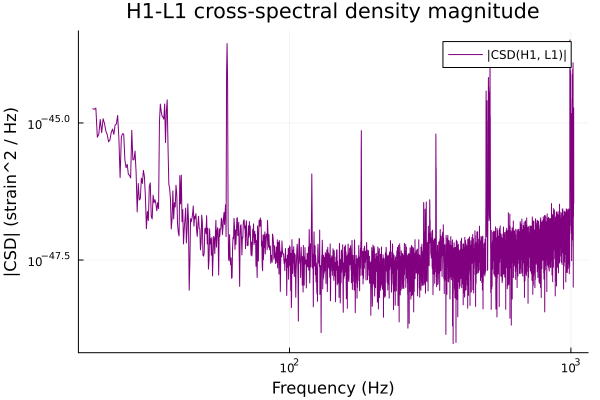
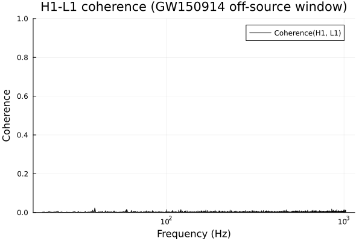

Coherence & CSD
The coherence between two channels is a frequency-domain measure of how correlated they are: at each frequency bin it's a number in [0, 1], 0 meaning "no linear relationship whatsoever" and 1 meaning "one channel is an exact (possibly scaled/delayed) copy of the other at that frequency". This tutorial uses one classic application of coherence in GW data analysis: comparing the two strain channels from independent, geographically separated detectors (LIGO-Hanford "H1" and LIGO-Livingston "L1") around GW150914. Real astrophysical strain coherence between two sites is far too weak to be statistically visible this way, so this is really a null-hypothesis check — and, as we'll see, the result (near-zero broadband coherence with a couple of narrow, physically-explicable spikes) is itself the interesting, correct answer, not a bug.
using GravitationalWaveData
using Plots
gr()Plots.GRBackend()Fetching two-detector data
We use the standard 4096 s H1 and L1 segments around GW150914 shared by these tutorials (the same data csd/coherence are validated on; see the Conventions page).
h1_path = fetch_open_data("H1", 1126256640, 1126260736)
l1_path = fetch_open_data("L1", 1126256640, 1126260736)
h1_full, _ = load_gwosc_strain(h1_path)
l1_full, _ = load_gwosc_strain(l1_path)(TimeSeries{Float64}(16777216 samples, t0=1.12625664e9, dt=0.000244140625, duration=4096.0s, name="strain"), TimeSeries{UInt32}(4096 samples, t0=1.12625664e9, dt=1.0, duration=4096.0s, name="DQmask"))csd/coherence require the two TimeSeries to share an identical sample grid (same dt, same length) with no missing data. GWOSC's public files pad any non-science-mode stretch with NaN, and this particular L1 file happens to have one such gap in its first ~190 seconds (well before GW150914 itself) — so we crop both series down to a clean, off-source 1024 s window, safely clear of both that gap and the merger itself:
trigger_gps = 1126259462.4
window_end = trigger_gps - 2.0
window_start = window_end - 1024.0
h1 = crop(h1_full, window_start, window_end)
l1 = crop(l1_full, window_start, window_end)
count(isnan, h1.data), count(isnan, l1.data)(0, 0)Cross-spectral density (CSD)
csd is the complex-valued generalization of psd to a pair of channels: Welch-averaged (Hann-windowed, 50%-overlapping segments, mean- not median-averaged since a median of complex values isn't a well-defined robust statistic — see docs/CONVENTIONS.md). coherence is built directly on top of it (|Pxy|^2 / (Pxx * Pyy)), so it's worth looking at on its own first. seglen is in samples, matching psd/asd's own convention — a 4-second segment at H1/L1's shared 4096 Hz sample rate is 4 * 4096 samples:
seglen = 4 * 4096
pxy = csd(h1, l1; seglen=seglen, overlap=0.5)FrequencySeries{ComplexF64}(8193 bins, f0=0.0, df=0.25, name="strain---strain CSD")The default FrequencySeries recipe is log-log, so (as with the PSD/ASD tutorial's reference-curve plots) we first crop away the DC bin – f=0 can't be shown on a log-frequency axis – and restrict to the 20-1024 Hz band:
plot_band = (20.0, 1024.0)
pxy_band = crop(pxy, plot_band...)FrequencySeries{ComplexF64}(4016 bins, f0=20.0, df=0.25, name="strain---strain CSD")plot(pxy_band; ylabel="|CSD| (strain^2 / Hz)", title="H1-L1 cross-spectral density magnitude",
label="|CSD(H1, L1)|", color=:purple)
csd returns a complex FrequencySeries; the default plot recipe already plots its magnitude on log-log axes (the same convention as a PSD/ASD plot, since |Pxy(f)| has the same units and dynamic range as Pxx(f)/Pyy(f)). Like the two detectors' individual noise spectra, it spans many orders of magnitude and has broadband structure — but magnitude alone doesn't tell us how much of that is genuine cross-correlation versus each channel's own individual noise level. That normalized answer is exactly what coherence gives us.
Coherence
coherence normalizes csd by each channel's own PSD (Pxx, Pyy, both mean-Welch via psd(...; method=:mean) for consistency with Pxy's own averaging), giving a real-valued result in [0, 1] at every frequency bin — how much of each channel's power at that frequency is linearly explained by the other:
coh = coherence(h1, l1; seglen=seglen, overlap=0.5)FrequencySeries{Float64}(8193 bins, f0=0.0, df=0.25, name="Coherence between strain and strain")We plot with a log-scaled frequency axis and a linear coherence axis fixed to [0, 1]: the FrequencySeries recipe defaults to log-log axes (appropriate for PSD/ASD/CSD-magnitude curves), so for this linearly-scaled [0, 1] quantity we override yscale explicitly – and, as above, crop away the unplottable f=0 DC bin first.
coh_band = crop(coh, plot_band...)
plot(coh_band; xlabel="Frequency (Hz)", ylabel="Coherence", yscale=:identity, ylim=(0, 1),
label="Coherence(H1, L1)", color=:black,
title="H1-L1 coherence (GW150914 off-source window)")
What this actually shows
H1 and L1 are ~3000 km apart with independent seismic/electronic/optical noise sources, so there is no physical reason for their noise to be correlated at any frequency — and no astrophysical signal in this off-source window either. The plot above bears that out: coherence sits at a low, broadband floor essentially everywhere, in the 20-1024 Hz band it measures (computed directly from coh, not eyeballed off the plot):
band_freqs = collect(frequencies(coh_band))
mean_coh = sum(coh_band.data) / length(coh_band)
median_coh = sort(coh_band.data)[length(coh_band) ÷ 2]
mean_coh, median_coh(0.002033746972736798, 0.001416250388601769)That floor is not exactly zero, and shouldn't be: with seglen/overlap fixed by the window above, this estimate averages over N = 511 Welch segments, and even two genuinely independent, uncorrelated Gaussian-noise channels have an expected coherence estimate of about 1/N at every bin (a well-known small-sample bias of the coherence estimator) rather than 0 — 1/511 ≈ 0.00196, right in line with the ~0.002 mean measured here. Averaging over more segments (a longer window, or a shorter seglen at fixed window length) pushes this floor down further; it never reaches exactly zero for a finite amount of data.
(N follows directly from the segmentation rule shared by psd/csd/coherence — seglen-sample segments starting round(seglen * (1 - overlap)) samples apart, see docs/CONVENTIONS.md — so it's reproducible from length(h1), seglen, and overlap alone without reaching into any internal helper.)
step = round(Int, seglen * (1 - 0.5))
n_segments = fld(length(h1) - seglen, step) + 1
n_segments, 1 / n_segments(511, 0.0019569471624266144)A handful of narrow bins do rise well above that floor — the strongest are visible as small spikes in the plot around 60 Hz and 120 Hz:
idx_sorted = sortperm(coh_band.data; rev=true)
[(band_freqs[k], coh_band.data[k]) for k in idx_sorted[1:5]]5-element Vector{Tuple{Float64, Float64}}:
(39.5, 0.02363984301157723)
(853.25, 0.017539503039949306)
(59.75, 0.016288093399612985)
(120.0, 0.014961069545202424)
(911.25, 0.014437682537733938)60 Hz (and its second harmonic, 120 Hz) is North American AC mains frequency. Even though H1 and L1 are on separate power grids hundreds of kilometers apart, mains-frequency electronics noise and the associated harmonics are a famously common shared line in both LIGO sites' instrumental noise — the classic example of coherence analysis is exactly this kind of coupling within one detector, between its strain channel and its mains-power monitor. Seeing a faint version of the same line show up between two independent detectors here is a real, physically sensible artifact of shared power-grid-frequency instrumental behavior — not evidence of an astrophysical signal. Crucially, even these peaks reach only a few percent coherence, nowhere near the 1.0 a truly common signal (or a single-segment estimate, which is trivially 1.0 everywhere — see coherence's own docstring for why averaging over multiple segments is essential) would produce. That combination — near-zero broadband floor consistent with the 1/N bias, plus small but non-zero peaks at known shared instrumental lines — is exactly the expected, correct result for two independent detectors' noise, and is itself a standard data-quality diagnostic: an unexpectedly large or broadband H1-L1 coherence would be the actual red flag, hinting at some shared environmental or electronics coupling between sites that has no business being there.
This page was generated using Literate.jl.